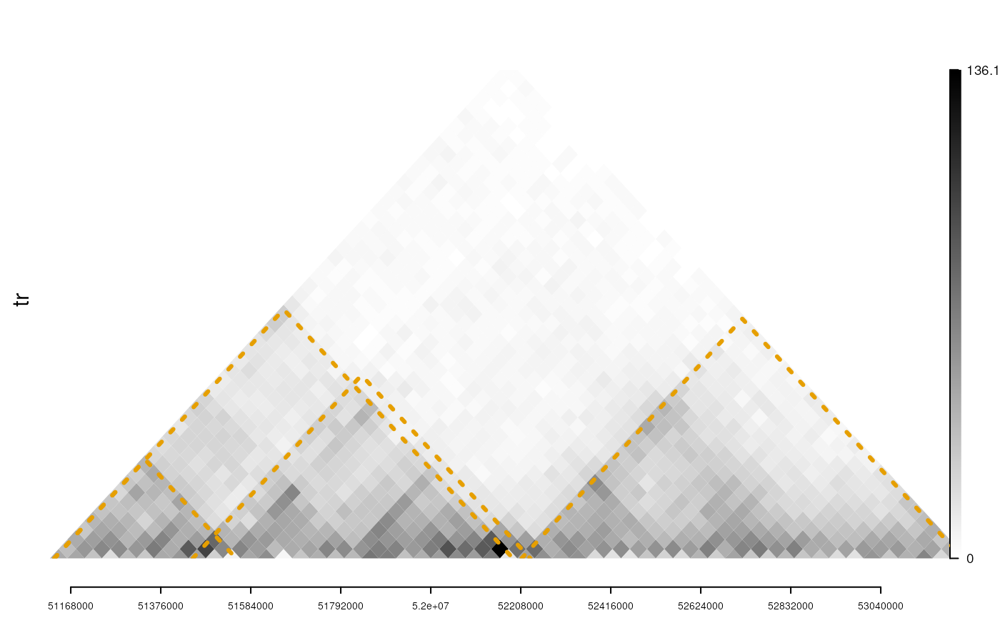

addInteractionAnnotation.RdA function to add annotation markers for emphasizing interactions
addInteractionAnnotation(
obj,
idx,
FUN = grid.polygon,
panel = c("top", "bottom"),
...
)A GInteractions object, GRanges object or numeric vector. For numeric vector, the positive value will generate a line with slope 1 and negative value will generate a line at the position with slope -1.
The layer number of track.
Function for plot. Available functions are grid.polygon, grid.lines, and grid.text for GInteractions object; grid.lines, and grid.text for GRanges object; FUN is not used for numeric vector.
Plot regions. Available values are "top", "bottom".
Parameters will be passed to FUN.
invisible viewport for plot region.
See Also as addGuideLine, addArrowMark
library(trackViewer)
library(InteractionSet)
gi <- readRDS(system.file("extdata", "nij.chr6.51120000.53200000.gi.rds",
package="trackViewer"))
tads <- GInteractions(
GRanges("chr6",
IRanges(c(51130001, 51130001, 51450001, 52210001), width = 20000)),
GRanges("chr6",
IRanges(c(51530001, 52170001, 52210001, 53210001), width = 20000)))
range <- GRanges("chr6", IRanges(51120000, 53200000))
tr <- gi2track(gi)
viewTracks(trackList(tr),
gr=range, autoOptimizeStyle = TRUE)
addInteractionAnnotation(tads, "tr", grid.lines,
gp=gpar(col = "#E69F00", lwd=3, lty=3))
